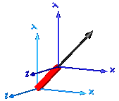


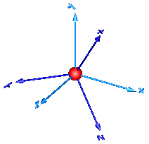


Components that constrain the motion between two frames
This package contains joint components, that is, idealized, massless elements that constrain the motion between frames. In subpackage Assemblies aggregation joint components are provided to handle kinematic loops analytically (this means that non-linear systems of equations occurring in these joint aggregations are analytically solved, i.e., robustly and efficiently).
| Model | Description |
|---|---|
| Prismatic | Prismatic joint and actuated prismatic joint
(1 translational degree-of-freedom, 2 potential states) 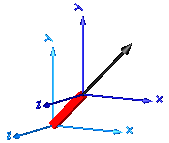 |
| Revolute | Revolute and actuated revolute joint
(1 rotational degree-of-freedom, 2 potential states)
|
| Cylindrical | Cylindrical joint (2 degrees-of-freedom, 4 potential states)
|
| Universal | Universal joint (2 degrees-of-freedom, 4 potential states)
|
| Planar | Planar joint (3 degrees-of-freedom, 6 potential states)
|
| Spherical | Spherical joint (3 constraints and no potential states, or 3 degrees-of-freedom and 3 states) 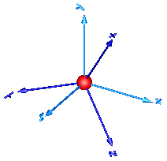 |
| FreeMotion | Free motion joint (6 degrees-of-freedom, 12 potential states)
|
| SphericalSpherical | Spherical - spherical joint aggregation (1 constraint,
no potential states) with an optional point mass in the middle
|
| UniversalSpherical | Universal - spherical joint aggregation (1 constraint, no potential states)
|
| GearConstraint | Ideal 3-dim. gearbox (arbitrary shaft directions) |
| MultiBody.Joints.Assemblies | Package of joint aggregations for analytic loop handling. |
| MultiBody.Joints.Constraints | Package of components that define joints by constraints |
Extends from Modelica.Icons.Package (Icon for standard packages).
| Name | Description |
|---|---|
| 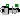 Prismatic | Prismatic joint (1 translational degree-of-freedom, 2 potential states, optional axis flange) |
| Revolute joint (1 rotational degree-of-freedom, 2 potential states, optional axis flange) | |
| 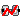 RevolutePlanarLoopConstraint | Revolute joint that is described by 2 positional constraints for usage in a planar loop (the ambiguous cut-force perpendicular to the loop and the ambiguous cut-torques are set arbitrarily to zero) |
| 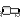 Cylindrical | Cylindrical joint (2 degrees-of-freedom, 4 potential states) |
| 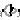 Universal | Universal joint (2 degrees-of-freedom, 4 potential states) |
| 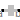 Planar | Planar joint (3 degrees-of-freedom, 6 potential states) |
| 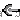 Spherical | Spherical joint (3 constraints and no potential states, or 3 degrees-of-freedom and 3 states) |
| 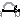 FreeMotion | Free motion joint (6 degrees-of-freedom, 12 potential states) |
| FreeMotionScalarInit | Free motion joint with scalar initialization and state selection (6 degrees-of-freedom, 12 potential states) |
| 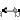 SphericalSpherical | Spherical - spherical joint aggregation (1 constraint, no potential states) with an optional point mass in the middle |
| 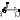 UniversalSpherical | Universal - spherical joint aggregation (1 constraint, no potential states) |
| 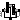 GearConstraint | Ideal 3-dim. gearbox (arbitrary shaft directions) |
| RollingWheel | Joint (no mass, no inertia) that describes an ideal rolling wheel (rolling on the plane z=0) |
| RollingWheelSet | Joint (no mass, no inertia) that describes an ideal rolling wheel set (two ideal rolling wheels connected together by an axis) |
| Components that aggregate several joints for analytic loop handling | |
| Components that define joints by constraints |
Prismatic joint (1 translational degree-of-freedom, 2 potential states, optional axis flange)
Joint where frame_b is translated along axis n which is fixed in frame_a. The two frames coincide when the relative distance "s = 0".
Optionally, two additional 1-dimensional mechanical flanges (flange "axis" represents the driving flange and flange "support" represents the bearing) can be enabled via parameter useAxisFlange. The enabled axis flange can be driven with elements of the Modelica.Mechanics.Translational library.
In the "Advanced" menu it can be defined via parameter stateSelect that the relative distance "s" and its derivative shall be definitely used as states by setting stateSelect=StateSelect.always. Default is StateSelect.prefer to use the relative distance and its derivative as preferred states. The states are usually selected automatically. In certain situations, especially when closed kinematic loops are present, it might be slightly more efficient, when using the StateSelect.always setting.
In the following figure the animation of a prismatic joint is shown. The light blue coordinate system is frame_a and the dark blue coordinate system is frame_b of the joint. The black arrow is parameter vector "n" defining the translation axis (here: n = {1,1,0}).
Extends from Modelica.Mechanics.MultiBody.Interfaces.PartialElementaryJoint (Base model for elementary joints (has two frames + outer world + assert to guarantee that the joint is connected)).
| Name | Description |
|---|---|
| useAxisFlange | = true, if axis flange is enabled |
| animation | = true, if animation shall be enabled |
| n | Axis of translation resolved in frame_a (= same as in frame_b) [1] |
| Animation | |
| if animation = true | |
| boxWidthDirection | Vector in width direction of box, resolved in frame_a [1] |
| boxWidth | Width of prismatic joint box [m] |
| boxHeight | Height of prismatic joint box [m] |
| boxColor | Color of prismatic joint box |
| specularCoefficient | Reflection of ambient light (= 0: light is completely absorbed) |
| Advanced | |
| stateSelect | Priority to use distance s and v=der(s) as states |
| Name | Description |
|---|---|
| frame_a | Coordinate system fixed to the joint with one cut-force and cut-torque |
| frame_b | Coordinate system fixed to the joint with one cut-force and cut-torque |
| axis | 1-dim. translational flange that drives the joint |
| support | 1-dim. translational flange of the drive drive support (assumed to be fixed in the world frame, NOT in the joint) |
Revolute joint (1 rotational degree-of-freedom, 2 potential states, optional axis flange)
Joint where frame_b rotates around axis n which is fixed in frame_a. The two frames coincide when the rotation angle "phi = 0".
Optionally, two additional 1-dimensional mechanical flanges (flange "axis" represents the driving flange and flange "support" represents the bearing) can be enabled via parameter useAxisFlange. The enabled axis flange can be driven with elements of the Modelica.Mechanics.Rotational library.
In the "Advanced" menu it can be defined via parameter stateSelect that the rotation angle "phi" and its derivative shall be definitely used as states by setting stateSelect=StateSelect.always. Default is StateSelect.prefer to use the joint angle and its derivative as preferred states. The states are usually selected automatically. In certain situations, especially when closed kinematic loops are present, it might be slightly more efficient, when using the StateSelect.always setting.
If a planar loop is present, e.g., consisting of 4 revolute joints where the joint axes are all parallel to each other, then there is no longer a unique mathematical solution and the symbolic algorithms will fail. Usually, an error message will be printed pointing out this situation. In this case, one revolute joint of the loop has to be replaced by a Joints.RevolutePlanarLoopConstraint joint. The effect is that from the 5 constraints of a usual revolute joint, 3 constraints are removed and replaced by appropriate known variables (e.g., the force in the direction of the axis of rotation is treated as known with value equal to zero; for standard revolute joints, this force is an unknown quantity).
In the following figure the animation of a revolute joint is shown. The light blue coordinate system is frame_a and the dark blue coordinate system is frame_b of the joint. The black arrow is parameter vector "n" defining the translation axis (here: n = {0,0,1}, phi.start = 45o).
| Name | Description |
|---|---|
| useAxisFlange | = true, if axis flange is enabled |
| animation | = true, if animation shall be enabled (show axis as cylinder) |
| n | Axis of rotation resolved in frame_a (= same as in frame_b) [1] |
| Animation | |
| if animation = true | |
| cylinderLength | Length of cylinder representing the joint axis [m] |
| cylinderDiameter | Diameter of cylinder representing the joint axis [m] |
| cylinderColor | Color of cylinder representing the joint axis |
| specularCoefficient | Reflection of ambient light (= 0: light is completely absorbed) |
| Advanced | |
| stateSelect | Priority to use joint angle phi and w=der(phi) as states |
| Name | Description |
|---|---|
| axis | 1-dim. rotational flange that drives the joint |
| support | 1-dim. rotational flange of the drive support (assumed to be fixed in the world frame, NOT in the joint) |
| frame_a | Coordinate system fixed to the joint with one cut-force and cut-torque |
| frame_b | Coordinate system fixed to the joint with one cut-force and cut-torque |
Revolute joint that is described by 2 positional constraints for usage in a planar loop (the ambiguous cut-force perpendicular to the loop and the ambiguous cut-torques are set arbitrarily to zero)
Joint where frame_b rotates around axis n which is fixed in frame_a and where this joint is used in a planar loop providing 2 constraint equations on position level.
If a planar loop is present, e.g., consisting of 4 revolute joints where the joint axes are all parallel to each other, then there is no unique mathematical solution if all revolute joints are modelled with Joints.Revolute and the symbolic algorithms will fail. The reason is that, e.g., the cut-forces in the revolute joints perpendicular to the planar loop are not uniquely defined when 3-dim. descriptions of revolute joints are used. Usually, an error message will be printed pointing out this situation. In this case, one revolute joint in the loop has to be replaced by model Joints.RevolutePlanarLoopCutJoint. The effect is that from the 5 constraints of a 3-dim. revolute joint, 3 constraints are removed and replaced by appropriate known variables (e.g., the force in the direction of the axis of rotation is treated as known with value equal to zero; for standard revolute joints, this force is an unknown quantity).
| Name | Description |
|---|---|
| animation | = true, if animation shall be enabled (show axis as cylinder) |
| n | Axis of rotation resolved in frame_a (= same as in frame_b) [1] |
| if animation = true | |
| cylinderLength | Length of cylinder representing the joint axis [m] |
| cylinderDiameter | Diameter of cylinder representing the joint axis [m] |
| cylinderColor | Color of cylinder representing the joint axis |
| specularCoefficient | Reflection of ambient light (= 0: light is completely absorbed) |
| Name | Description |
|---|---|
| frame_a | Coordinate system fixed to the joint with one cut-force and cut-torque |
| frame_b | Coordinate system fixed to the joint with one cut-force and cut-torque |
Cylindrical joint (2 degrees-of-freedom, 4 potential states)
Joint where frame_b rotates around and translates along axis n which is fixed in frame_a. The two frames coincide when "phi=revolute.phi=0" and "s=prismatic.s=0". This joint has the following potential states;
They are used as candidates for automatic selection of states from the tool. This may be enforced by setting "stateSelect=StateSelect.always" in the Advanced menu. The states are usually selected automatically. In certain situations, especially when closed kinematic loops are present, it might be slightly more efficient, when using the "StateSelect.always" setting.
In the following figure the animation of a cylindrical joint is shown. The light blue coordinate system is frame_a and the dark blue coordinate system is frame_b of the joint. The black arrow is parameter vector "n" defining the cylinder axis (here: n = {0,0,1}).
Extends from Modelica.Mechanics.MultiBody.Interfaces.PartialTwoFrames (Base model for components providing two frame connectors + outer world + assert to guarantee that the component is connected).
| Name | Description |
|---|---|
| animation | = true, if animation shall be enabled (show cylinder) |
| n | Cylinder axis resolved in frame_a (= same as in frame_b) [1] |
| Animation | |
| if animation = true | |
| cylinderDiameter | Diameter of cylinder [m] |
| cylinderColor | Color of cylinder |
| specularCoefficient | Reflection of ambient light (= 0: light is completely absorbed) |
| Advanced | |
| stateSelect | Priority to use joint coordinates (phi, s, w, v) as states |
| Name | Description |
|---|---|
| frame_a | Coordinate system fixed to the component with one cut-force and cut-torque |
| frame_b | Coordinate system fixed to the component with one cut-force and cut-torque |
Universal joint (2 degrees-of-freedom, 4 potential states)
Joint where frame_a rotates around axis n_a which is fixed in frame_a and frame_b rotates around axis n_b which is fixed in frame_b. The two frames coincide when "revolute_a.phi=0" and "revolute_b.phi=0". This joint has the following potential states;
They are used as candidates for automatic selection of states from the tool. This may be enforced by setting "stateSelect=StateSelect.always" in the Advanced menu. The states are usually selected automatically. In certain situations, especially when closed kinematic loops are present, it might be slightly more efficient, when using the "StateSelect.always" setting.
In the following figure the animation of a universal joint is shown. The light blue coordinate system is frame_a and the dark blue coordinate system is frame_b of the joint (here: n_a = {0,0,1}, n_b = {0,1,0}, phi_a.start = 90o, phi_b.start = 45o).
Extends from Modelica.Mechanics.MultiBody.Interfaces.PartialTwoFrames (Base model for components providing two frame connectors + outer world + assert to guarantee that the component is connected).
| Name | Description |
|---|---|
| animation | = true, if animation shall be enabled |
| n_a | Axis of revolute joint 1 resolved in frame_a [1] |
| n_b | Axis of revolute joint 2 resolved in frame_b [1] |
| Animation | |
| if animation = true | |
| cylinderLength | Length of cylinders representing the joint axes [m] |
| cylinderDiameter | Diameter of cylinders representing the joint axes [m] |
| cylinderColor | Color of cylinders representing the joint axes |
| specularCoefficient | Reflection of ambient light (= 0: light is completely absorbed) |
| Advanced | |
| stateSelect | Priority to use joint coordinates (phi_a, phi_b, w_a, w_b) as states |
| Name | Description |
|---|---|
| frame_a | Coordinate system fixed to the component with one cut-force and cut-torque |
| frame_b | Coordinate system fixed to the component with one cut-force and cut-torque |
Planar joint (3 degrees-of-freedom, 6 potential states)
Joint where frame_b can move in a plane and can rotate around an axis orthogonal to the plane. The plane is defined by vector n which is perpendicular to the plane and by vector n_x, which points in the direction of the x-axis of the plane. frame_a and frame_b coincide when s_x=prismatic_x.s=0, s_y=prismatic_y.s=0 and phi=revolute.phi=0. This joint has the following potential states:
They are used as candidates for automatic selection of states from the tool. This may be enforced by setting "stateSelect=StateSelect.always" in the Advanced menu. The states are usually selected automatically. In certain situations, especially when closed kinematic loops are present, it might be slightly more efficient, when using the "StateSelect.always" setting.
In the following figure the animation of a planar joint is shown. The light blue coordinate system is frame_a and the dark blue coordinate system is frame_b of the joint. The black arrows are parameter vectors "n" and "n_x" (here: n = {0,1,0}, n_x = {0,0,1}, s_x.start = 0.5, s_y.start = 0.5, phi.start = 45o).
Extends from Modelica.Mechanics.MultiBody.Interfaces.PartialTwoFrames (Base model for components providing two frame connectors + outer world + assert to guarantee that the component is connected).
| Name | Description |
|---|---|
| animation | = true, if animation shall be enabled |
| n | Axis orthogonal to unconstrained plane, resolved in frame_a (= same as in frame_b) [1] |
| n_x | Vector in direction of x-axis of plane, resolved in frame_a (n_x shall be orthogonal to n) [1] |
| Animation | |
| if animation = true | |
| cylinderLength | Length of revolute cylinder [m] |
| cylinderDiameter | Diameter of revolute cylinder [m] |
| cylinderColor | Color of revolute cylinder |
| boxWidth | Width of prismatic joint boxes [m] |
| boxHeight | Height of prismatic joint boxes [m] |
| boxColor | Color of prismatic joint boxes |
| Advanced | |
| stateSelect | Priority to use joint coordinates (s_x, s_y, phi, v_x, v_y, w) as states |
| Name | Description |
|---|---|
| frame_a | Coordinate system fixed to the component with one cut-force and cut-torque |
| frame_b | Coordinate system fixed to the component with one cut-force and cut-torque |
Spherical joint (3 constraints and no potential states, or 3 degrees-of-freedom and 3 states)
Joint with 3 constraints that define that the origin of frame_a and the origin of frame_b coincide. By default this joint defines only the 3 constraints without any potential states. If parameter enforceStates is set to true in the "Advanced" menu, three states are introduced. Depending on parameter useQuaternions these are either quaternions and the relative angular velocity or 3 angles and the angle derivatives. In the latter case the orientation of frame_b is computed by rotating frame_a along the axes defined in parameter vector "sequence_angleStates" (default = {1,2,3}, i.e., the Cardan angle sequence) around the angles used as states. For example, the default is to rotate the x-axis of frame_a around angles[1], the new y-axis around angles[2] and the new z-axis around angles[3], arriving at frame_b. If angles are used as states there is the slight disadvantage that a singular configuration is present leading to a division by zero.
If this joint is used in a chain structure, a Modelica translator has to select orientation coordinates of a body as states, if the default setting is used. It is usually better to use relative coordinates in the spherical joint as states, and therefore in this situation parameter enforceStates might be set to true.
If this joint is used in a loop structure, the default setting results in a cut-joint that breaks the loop in independent kinematic pieces, hold together by the constraints of this joint. As a result, a Modelica translator will first try to select 3 generalized coordinates in the joints of the remaining parts of the loop and their first derivative as states and if this is not possible, e.g., because there are only spherical joints in the loop, will select coordinates from a body of the loop as states.
In the following figure the animation of a spherical joint is shown. The light blue coordinate system is frame_a and the dark blue coordinate system is frame_b of the joint. (here: angles_start = {45, 45, 45}o).
Extends from Modelica.Mechanics.MultiBody.Interfaces.PartialTwoFrames (Base model for components providing two frame connectors + outer world + assert to guarantee that the component is connected).
| Name | Description |
|---|---|
| animation | = true, if animation shall be enabled (show sphere) |
| if animation = true | |
| sphereDiameter | Diameter of sphere representing the spherical joint [m] |
| sphereColor | Color of sphere representing the spherical joint |
| specularCoefficient | Reflection of ambient light (= 0: light is completely absorbed) |
| Initialization | |
| angles_fixed | = true, if angles_start are used as initial values, else as guess values |
| angles_start[3] | Initial values of angles to rotate frame_a around 'sequence_start' axes into frame_b [rad] |
| sequence_start | Sequence of rotations to rotate frame_a into frame_b at initial time |
| w_rel_a_fixed | = true, if w_rel_a_start are used as initial values, else as guess values |
| w_rel_a_start[3] | Initial values of angular velocity of frame_b with respect to frame_a, resolved in frame_a [rad/s] |
| z_rel_a_fixed | = true, if z_rel_a_start are used as initial values, else as guess values |
| z_rel_a_start[3] | Initial values of angular acceleration z_rel_a = der(w_rel_a) [rad/s2] |
| Advanced | |
| enforceStates | = true, if relative variables of spherical joint shall be used as states (StateSelect.always) |
| useQuaternions | = true, if quaternions shall be used as states otherwise use 3 angles as states (provided enforceStates=true) |
| sequence_angleStates | Sequence of rotations to rotate frame_a into frame_b around the 3 angles used as states |
| Name | Description |
|---|---|
| frame_a | Coordinate system fixed to the component with one cut-force and cut-torque |
| frame_b | Coordinate system fixed to the component with one cut-force and cut-torque |
Free motion joint (6 degrees-of-freedom, 12 potential states)
Joint which does not constrain the motion between frame_a and frame_b. Such a joint is only meaningful if the relative distance and orientation between frame_a and frame_b, and their derivatives, shall be used as states.
Note, that bodies such as Parts.Body, Parts.BodyShape, have potential states describing the distance and orientation, and their derivatives, between the world frame and a body fixed frame. Therefore, if these potential state variables are suited, a FreeMotion joint is not needed.
The states of the FreeMotion object are:
The quaternions have the slight disadvantage that there is a non-linear constraint equation between the 4 quaternions. Therefore, at least one non-linear equation has to be solved during simulation. A tool might, however, analytically solve this simple constraint equation. Using the 3 angles as states has the disadvantage that there is a singular configuration in which a division by zero will occur. If it is possible to determine in advance for an application class that this singular configuration is outside of the operating region, the 3 angles might be used as states by setting useQuaternions = false.
In text books about 3-dimensional mechanics often 3 angles and the angular velocity are used as states. This is not the case here, since 3 angles and their derivatives are used as states (if useQuaternions = false). The reason is that for real-time simulation the discretization formula of the integrator might be "inlined" and solved together with the model equations. By appropriate symbolic transformation the performance is drastically increased if angles and their derivatives are used as states, instead of angles and the angular velocity.
If parameter enforceStates is set to true (= the default) in the "Advanced" menu, then FreeMotion variables are forced to be used as states according to the setting of parameters "useQuaternions" and "sequence_angleStates".
In the following figure the animation of a FreeMotion joint is shown. The light blue coordinate system is frame_a and the dark blue coordinate system is frame_b of the joint. (here: r_rel_a_start = {0.5, 0, 0.5}, angles_start = {45, 45, 45}o).
Extends from Modelica.Mechanics.MultiBody.Interfaces.PartialTwoFrames (Base model for components providing two frame connectors + outer world + assert to guarantee that the component is connected).
| Name | Description |
|---|---|
| animation | = true, if animation shall be enabled (show arrow from frame_a to frame_b) |
| Initialization | |
| r_rel_a[3] | Position vector from origin of frame_a to origin of frame_b, resolved in frame_a [m] |
| v_rel_a[3] | = der(r_rel_a), i.e., velocity of origin of frame_b with respect to origin of frame_a, resolved in frame_a [m/s] |
| a_rel_a[3] | = der(v_rel_a) [m/s2] |
| angles_fixed | = true, if angles_start are used as initial values, else as guess values |
| angles_start[3] | Initial values of angles to rotate frame_a around 'sequence_start' axes into frame_b [rad] |
| sequence_start | Sequence of rotations to rotate frame_a into frame_b at initial time |
| w_rel_a_fixed | = true, if w_rel_a_start are used as initial values, else as guess values |
| w_rel_a_start[3] | Initial values of angular velocity of frame_b with respect to frame_a, resolved in frame_a [rad/s] |
| z_rel_a_fixed | = true, if z_rel_a_start are used as initial values, else as guess values |
| z_rel_a_start[3] | Initial values of angular acceleration z_rel_a = der(w_rel_a) [rad/s2] |
| Animation | |
| if animation = true | |
| arrowDiameter | Diameter of arrow from frame_a to frame_b [m] |
| arrowColor | Color of arrow |
| specularCoefficient | Reflection of ambient light (= 0: light is completely absorbed) |
| Advanced | |
| enforceStates | = true, if relative variables between frame_a and frame_b shall be used as states |
| useQuaternions | = true, if quaternions shall be used as states otherwise use 3 angles as states |
| sequence_angleStates | Sequence of rotations to rotate frame_a into frame_b around the 3 angles used as states |
| Name | Description |
|---|---|
| frame_a | Coordinate system fixed to the component with one cut-force and cut-torque |
| frame_b | Coordinate system fixed to the component with one cut-force and cut-torque |
Free motion joint with scalar initialization and state selection (6 degrees-of-freedom, 12 potential states)
Joint which does not constrain the motion between frame_a and frame_b. Such a joint is meaningful if the relative distance and orientation between frame_a and frame_b, and their derivatives, shall be used as states or shall be used for non-standard initialization. This joint allows to initialize every scalar element of the relative quantities, as well as to define StateSelect attributes for every scalar element separately.
In the following figure the animation of a FreeMotionScalarInit joint is shown. The light blue coordinate system is frame_a and the dark blue coordinate system is frame_b of the joint. (here: r_rel_a_1(start = 0.5), r_rel_a_2(start = 0), r_rel_a_3(start = 0.5), angle_1(start = 45o), angle_2(start = 45o), angle_3(start = 45o)).
A example to use this joint for the initialization of a planar double pendulum by providing its tip position, is shown in Examples.Elementary.DoublePendulumInitTip.
Extends from Modelica.Mechanics.MultiBody.Interfaces.PartialTwoFrames (Base model for components providing two frame connectors + outer world + assert to guarantee that the component is connected).
| Name | Description |
|---|---|
| animation | = true, if animation shall be enabled (show arrow from frame_a to frame_b) |
| Translational Initialization | |
| Position vector r_rel_a from origin of frame_a to origin of frame_b, resolved in frame_a | |
| use_r | = true, if r_rel_a shall be used |
| r_rel_a_1 | Relative distance r_rel_a[1] [m] |
| r_rel_a_2 | Relative distance r_rel_a[2] [m] |
| r_rel_a_3 | Relative distance r_rel_a[3] [m] |
| r_rel_a_1_stateSelect | StateSelect of r_rel_a[1] |
| r_rel_a_2_stateSelect | StateSelect of r_rel_a[2] |
| r_rel_a_3_stateSelect | StateSelect of r_rel_a[3] |
| Velocity vector v_rel_a = der(r_rel_a) | |
| use_v | = true, if v_rel_a shall be used |
| v_rel_a_1 | Relative velocity v_rel_a[1] [m/s] |
| v_rel_a_2 | Relative velocity v_rel_a[2] [m/s] |
| v_rel_a_3 | Relative velocity v_rel_a[3] [m/s] |
| v_rel_a_1_stateSelect | StateSelect of v_rel_a[1] |
| v_rel_a_2_stateSelect | StateSelect of v_rel_a[2] |
| v_rel_a_3_stateSelect | StateSelect of v_rel_a[3] |
| Acceleration vector a_rel_a = der(v_rel_a) | |
| use_a | = true, if a_rel_a shall be used |
| a_rel_a_1 | Relative acceleration a_rel_a[1] [m/s2] |
| a_rel_a_2 | Relative acceleration a_rel_a[2] [m/s2] |
| a_rel_a_3 | Relative acceleration a_rel_a[3] [m/s2] |
| Angle Initialization | |
| Angles to rotate frame_a to frame_b along sequence_start | |
| use_angle | = true, if angle shall be used |
| sequence_start | Sequence of angle rotations |
| angle_1 | First rotation angle or dummy [rad] |
| angle_2 | Second rotation angle or dummy [rad] |
| angle_3 | Third rotation angle or dummy [rad] |
| angle_1_stateSelect | StateSelect of angle_1 |
| angle_2_stateSelect | StateSelect of angle_2 |
| angle_3_stateSelect | StateSelect of angle_3 |
| angle_d = der(angle) | |
| use_angle_d | = true, if angle_d shall be used |
| angle_d_1 | = der(angle_1) [rad/s] |
| angle_d_2 | = der(angle_2) [rad/s] |
| angle_d_3 | = der(angle_3) [rad/s] |
| angle_d_1_stateSelect | StateSelect of angle_d_1 |
| angle_d_2_stateSelect | StateSelect of angle_d_2 |
| angle_d_3_stateSelect | StateSelect of angle_d_3 |
| angle_dd = der(angle_d) | |
| use_angle_dd | = true, if angle_dd shall be used |
| angle_dd_1 | = der(angle_d_1) [rad/s2] |
| angle_dd_2 | = der(angle_d_2) [rad/s2] |
| angle_dd_3 | = der(angle_d_3) [rad/s2] |
| Angular Velocity Initialization | |
| Angular velocity w_rel_b of frame_b with respect to frame_a, resolved in frame_b | |
| use_w | = true, if w_rel_b shall be used |
| w_rel_b_1 | Relative angular velocity w_rel_b[1] [rad/s] |
| w_rel_b_2 | Relative angular velocity w_rel_b[2] [rad/s] |
| w_rel_b_3 | Relative angular velocity w_rel_b[3] [rad/s] |
| w_rel_b_1_stateSelect | StateSelect of w_rel_b[1] |
| w_rel_b_2_stateSelect | StateSelect of w_rel_b[2] |
| w_rel_b_3_stateSelect | StateSelect of w_rel_b[3] |
| Angular acceleration z_rel_b = der(w_rel_b) | |
| use_z | = true, if z_rel_b shall be used |
| z_rel_b_1 | Relative angular acceleration z_rel_b[1] [rad/s2] |
| z_rel_b_2 | Relative angular acceleration z_rel_b[2] [rad/s2] |
| z_rel_b_3 | Relative angular acceleration z_rel_b[3] [rad/s2] |
| Animation | |
| if animation = true | |
| arrowDiameter | Diameter of arrow from frame_a to frame_b [m] |
| arrowColor | Color of arrow |
| specularCoefficient | Reflection of ambient light (= 0: light is completely absorbed) |
| Name | Description |
|---|---|
| frame_a | Coordinate system fixed to the component with one cut-force and cut-torque |
| frame_b | Coordinate system fixed to the component with one cut-force and cut-torque |
| Translational Initialization | |
| Position vector r_rel_a from origin of frame_a to origin of frame_b, resolved in frame_a | |
| r_rel_a_1 | Relative distance r_rel_a[1] [m] |
| r_rel_a_2 | Relative distance r_rel_a[2] [m] |
| r_rel_a_3 | Relative distance r_rel_a[3] [m] |
| Velocity vector v_rel_a = der(r_rel_a) | |
| v_rel_a_1 | Relative velocity v_rel_a[1] [m/s] |
| v_rel_a_2 | Relative velocity v_rel_a[2] [m/s] |
| v_rel_a_3 | Relative velocity v_rel_a[3] [m/s] |
| Acceleration vector a_rel_a = der(v_rel_a) | |
| a_rel_a_1 | Relative acceleration a_rel_a[1] [m/s2] |
| a_rel_a_2 | Relative acceleration a_rel_a[2] [m/s2] |
| a_rel_a_3 | Relative acceleration a_rel_a[3] [m/s2] |
| Angle Initialization | |
| Angles to rotate frame_a to frame_b along sequence_start | |
| angle_1 | First rotation angle or dummy [rad] |
| angle_2 | Second rotation angle or dummy [rad] |
| angle_3 | Third rotation angle or dummy [rad] |
| angle_d = der(angle) | |
| angle_d_1 | = der(angle_1) [rad/s] |
| angle_d_2 | = der(angle_2) [rad/s] |
| angle_d_3 | = der(angle_3) [rad/s] |
| angle_dd = der(angle_d) | |
| angle_dd_1 | = der(angle_d_1) [rad/s2] |
| angle_dd_2 | = der(angle_d_2) [rad/s2] |
| angle_dd_3 | = der(angle_d_3) [rad/s2] |
| Angular Velocity Initialization | |
| Angular velocity w_rel_b of frame_b with respect to frame_a, resolved in frame_b | |
| w_rel_b_1 | Relative angular velocity w_rel_b[1] [rad/s] |
| w_rel_b_2 | Relative angular velocity w_rel_b[2] [rad/s] |
| w_rel_b_3 | Relative angular velocity w_rel_b[3] [rad/s] |
| Angular acceleration z_rel_b = der(w_rel_b) | |
| z_rel_b_1 | Relative angular acceleration z_rel_b[1] [rad/s2] |
| z_rel_b_2 | Relative angular acceleration z_rel_b[2] [rad/s2] |
| z_rel_b_3 | Relative angular acceleration z_rel_b[3] [rad/s2] |
Spherical - spherical joint aggregation (1 constraint, no potential states) with an optional point mass in the middle
Joint that has a spherical joint on each of its two ends. The rod connecting the two spherical joints is approximated by a point mass that is located in the middle of the rod. When the mass is set to zero (default), special code for a massless body is generated. In the following default animation figure, the two spherical joints are represented by two red spheres, the connecting rod by a grey cylinder and the point mass in the middle of the rod by a light blue sphere:
This joint introduces one constraint defining that the distance between the origin of frame_a and the origin of frame_b is constant (= rodLength). It is highly recommended to use this joint in loops whenever possible, because this enhances the efficiency considerably due to smaller systems of non-linear algebraic equations.
It is sometimes desirable to compute the rodLength of the connecting rod during initialization. For this, parameter computeLength has to be set to true and instead one other, easier to determine, position variable in the same loop needs to have a fixed attribute of true. For example, if a loop consists of one Revolute joint, one Prismatic joint and a SphericalSpherical joint, one may fix the start values of the revolute joint angle and of the relative distance of the prismatic joint in order to compute the rodLength of the rod.
It is not possible to connect other components, such as a body with mass properties or a special visual shape object to the rod connecting the two spherical joints. If this is needed, use instead joint Joints.UniversalSpherical that has this property.
Extends from Interfaces.PartialTwoFrames (Base model for components providing two frame connectors + outer world + assert to guarantee that the component is connected).
| Name | Description |
|---|---|
| animation | = true, if animation shall be enabled |
| showMass | = true, if mass shall be shown (provided animation = true and m > 0) |
| computeRodLength | = true, if rodLength shall be computed during initialization (see info) |
| rodLength | Distance between the origins of frame_a and frame_b (if computeRodLength=true, guess value) [m] |
| m | Mass of rod (= point mass located in middle of rod) [kg] |
| Animation | |
| if animation = true | |
| sphereDiameter | Diameter of spheres representing the spherical joints [m] |
| sphereColor | Color of spheres representing the spherical joints |
| rodDiameter | Diameter of rod connecting the two spherical joint [m] |
| rodColor | Color of rod connecting the two spherical joints |
| specularCoefficient | Reflection of ambient light (= 0: light is completely absorbed) |
| if animation = true and showMass = true and m > 0 | |
| massDiameter | Diameter of sphere representing the mass point [m] |
| massColor | Color of sphere representing the mass point |
| Advanced | |
| kinematicConstraint | = false, if no constraint shall be defined, due to analytically solving a kinematic loop ("false" should not be used by user, but only by MultiBody.Joints.Assemblies joints) |
| constraintResidue | Constraint equation of joint in residue form: Either length constraint (= default) or equation to compute rod force (for analytic solution of loops in combination with Internal.RevoluteWithLengthConstraint/PrismaticWithLengthConstraint) |
| checkTotalPower | = true, if total power flowing into this component shall be determined (must be zero) |
| Name | Description |
|---|---|
| frame_a | Coordinate system fixed to the component with one cut-force and cut-torque |
| frame_b | Coordinate system fixed to the component with one cut-force and cut-torque |
Universal - spherical joint aggregation (1 constraint, no potential states)
This component consists of a universal joint at frame_a and a spherical joint at frame_b that are connected together with a rigid rod, see default animation figure (the arrows are not part of the default animation):
This joint aggregation has no mass and no inertia and introduces the constraint that the distance between the origin of frame_a and the origin of frame_b is constant (= Frames.length(rRod_ia)). The universal joint is defined in the following way:
The definition of axis 2 of the universal joint is performed according to the most often occurring case. In a future release, axis 2 might be explicitly definable via a parameter. However, the treatment is much more complicated and the number of operations is considerably higher, if axis 2 is not orthogonal to axis 1 and to the connecting rod.
Note, there is a singularity when axis 1 and the connecting rod are parallel to other. Therefore, if possible n1_a should be selected in such a way that it is perpendicular to rRod_ia in the initial configuration (i.e., the distance to the singularity is as large as possible).
An additional frame_ia is present. It is fixed in the connecting rod at the origin of frame_a. The placement of frame_ia on the rod is implicitly defined by the universal joint (frame_a and frame_ia coincide when the angles of the two revolute joints of the universal joint are zero) and by parameter vector rRod_ia, the position vector from the origin of frame_a to the origin of frame_b, resolved in frame_ia.
The easiest way to define the parameters of this joint is by moving the MultiBody system in a reference configuration where all frames of all components are parallel to other (alternatively, at least frame_a and frame_ia of the UniversalSpherical joint should be parallel to other when defining an instance of this component). Since frame_a and frame_ia are parallel to other, vector rRod_ia from frame_a to frame_b resolved in frame_ia can be resolved in frame_a (or the world frame, if all frames are parallel to other).
This joint aggregation can be used in cases where in reality a rod with spherical joints at end are present. Such a system has an additional degree of freedom to rotate the rod along its axis. In practice this rotation is usually of no interest and is mathematically removed by replacing one of the spherical joints by a universal joint. Still, in most cases the Joints.SphericalSpherical joint aggregation can be used instead of the UniversalSpherical joint since the rod is animated and its mass properties are approximated by a point mass in the middle of the rod. The SphericalSpherical joint has the advantage that it does not have a singular configuration.
In the public interface of the UniversalSpherical joint, the following (final) parameters are provided:
parameter Real rodLength(unit="m") "Length of rod"; parameter Real eRod_ia[3] "Unit vector along rod, resolved in frame_ia"; parameter Real e2_ia [3] "Unit vector along axis 2, resolved in frame_ia";
This allows a more convenient definition of data which is related to the rod. For example, if a box shall be connected at frame_ia directing from the origin of frame_a to the middle of the rod, this might be defined as:
Modelica.Mechanics.MultiBody.Joints.UniversalSpherical jointUS(rRod_ia={1.2, 1, 0.2});
Modelica.Mechanics.MultiBody.Visualizers.FixedShape shape(shapeType = "box",
lengthDirection = jointUS.eRod_ia,
widthDirection = jointUS.e2_ia,
length = jointUS.rodLength/2,
width = jointUS.rodLength/10);
equation
connect(jointUS.frame_ia, shape.frame_a);
Extends from Interfaces.PartialTwoFrames (Base model for components providing two frame connectors + outer world + assert to guarantee that the component is connected).
| Name | Description |
|---|---|
| animation | = true, if animation shall be enabled |
| showUniversalAxes | = true, if universal joint shall be visualized with two cylinders, otherwise with a sphere (provided animation=true) |
| computeRodLength | = true, if distance between frame_a and frame_b shall be computed during initialization (see info) |
| n1_a | Axis 1 of universal joint resolved in frame_a (axis 2 is orthogonal to axis 1 and to rod) [1] |
| rRod_ia[3] | Vector from origin of frame_a to origin of frame_b, resolved in frame_ia (if computeRodLength=true, rRod_ia is only an axis vector along the connecting rod) [m] |
| Animation | |
| if animation = true | |
| sphereDiameter | Diameter of spheres representing the universal and the spherical joint [m] |
| sphereColor | Color of spheres representing the universal and the spherical joint |
| rodShapeType | Shape type of rod connecting the universal and the spherical joint |
| rodWidth | Width of rod shape in direction of axis 2 of universal joint. [m] |
| rodHeight | Height of rod shape in direction that is orthogonal to rod and to axis 2 [m] |
| rodExtra | Additional parameter depending on rodShapeType |
| rodColor | Color of rod shape connecting the universal and the spherical joints |
| specularCoefficient | Reflection of ambient light (= 0: light is completely absorbed) |
| if animation = true and showUniversalAxes | |
| cylinderLength | Length of cylinders representing the two universal joint axes [m] |
| cylinderDiameter | Diameter of cylinders representing the two universal joint axes [m] |
| cylinderColor | Color of cylinders representing the two universal joint axes |
| Advanced | |
| kinematicConstraint | = false, if no constraint shall be defined, due to analytically solving a kinematic loop |
| constraintResidue | Constraint equation of joint in residue form: Either length constraint (= default) or equation to compute rod force (for analytic solution of loops in combination with Internal.RevoluteWithLengthConstraint/PrismaticWithLengthConstraint) |
| checkTotalPower | = true, if total power flowing into this component shall be determined (must be zero) |
| Name | Description |
|---|---|
| frame_a | Coordinate system fixed to the component with one cut-force and cut-torque |
| frame_b | Coordinate system fixed to the component with one cut-force and cut-torque |
| frame_ia | Coordinate system at the origin of frame_a, fixed at the rod connecting the universal with the spherical joint |
Ideal 3-dim. gearbox (arbitrary shaft directions)
This ideal massless joint provides a gear constraint between
frames frame_a and frame_b. The axes of rotation
of frame_a and frame_b may be arbitrary.
Reference
Schweiger, Christian ;
Otter, Martin:
Modelling
3D Mechanical Effects of 1-dim. Powertrains. In: Proceedings of the 3rd International
Modelica Conference. Linköping : The Modelica Association and Linköping University,
November 3-4, 2003, pp. 149-158
Extends from Modelica.Mechanics.MultiBody.Interfaces.PartialTwoFrames (Base model for components providing two frame connectors + outer world + assert to guarantee that the component is connected).
| Name | Description |
|---|---|
| ratio | Gear speed ratio |
| n_a | Axis of rotation of shaft a (same coordinates in frame_a, frame_b, bearing) [1] |
| n_b | Axis of rotation of shaft b (same coordinates in frame_a, frame_b, bearing) [1] |
| r_a[3] | Vector from frame bearing to frame_a resolved in bearing [m] |
| r_b[3] | Vector from frame bearing to frame_b resolved in bearing [m] |
| Advanced | |
| stateSelect | Priority to use joint coordinates (phi_a, phi_b, w_a, w_b) as states |
| Name | Description |
|---|---|
| frame_a | Coordinate system fixed to the component with one cut-force and cut-torque |
| frame_b | Coordinate system fixed to the component with one cut-force and cut-torque |
| bearing | Coordinate system fixed in the bearing |
Joint (no mass, no inertia) that describes an ideal rolling wheel (rolling on the plane z=0)
| Name | Description |
|---|---|
| wheelRadius | Wheel radius [m] |
| stateSelect | Priority to use generalized coordinates as states |
| Initialization | |
| angles[3] | Angles to rotate world-frame in to frame_a around z-, y-, x-axis [rad] |
| der_angles[3] | Derivative of angles [rad/s] |
| Name | Description |
|---|---|
| frame_a | Frame fixed in wheel center point. x-Axis: upwards, y-axis: along wheel axis |
Joint (no mass, no inertia) that describes an ideal rolling wheel set (two ideal rolling wheels connected together by an axis)
| Name | Description |
|---|---|
| animation | = true, if animation of wheel set shall be enabled |
| wheelRadius | Radius of one wheel [m] |
| wheelDistance | Distance between the two wheels [m] |
| stateSelect | Priority to use the generalized coordinates as states |
| Name | Description |
|---|---|
| frameMiddle | Frame fixed in middle of axis connecting both wheels (y-axis: along wheel axis, z-Axis: upwards) |
| frame1 | Frame fixed in center point of left wheel (y-axis: along wheel axis, z-Axis: upwards) |
| frame2 | Frame fixed in center point of right wheel (y-axis: along wheel axis, z-Axis: upwards) |
| axis1 | 1-dim. rotational flange that drives the joint |
| axis2 | 1-dim. rotational flange that drives the joint |
| support | Support of 1D axes |